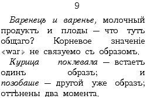
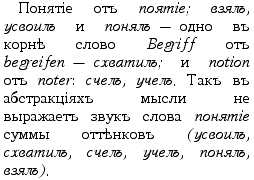
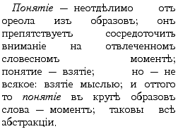
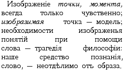

Glossolalia (Section 9)

The Russian words varenets [fermented boiled milk] and varen'ye [preserves], a dairy product and fruits -- what do the have in common? The root signification of "war" is not connected to the image. A chicken pecked -- one image arises; and gobbled it up is another image; two moments are accentuated.

Concept/Comprehension [ponyatie] is from grasping [poyatie]; he took [vzyal], assimilated [usvoil], and comprehended [ponyal]-- have the same root as the word Begriff from begreifen -- to grasp [skhvatil]; and notion from noter; to consider [schyol], take into account [uchyol]. Thus in these abstractions of thought the sound of the word for comprehension [ponyatie] does not express the sum total of its shades of meaning (assimilated, grasped, considered, took into account, comprehended, took).

The concept is -- inseparable from the aureole of images; it prevents one from concentrating attention on the isolated verbal moment; a concept is -- taking/grasping; but -- not just any one: it is taking in by means of thought; and thus the concept in the circle of images of the word is -- a moment; all abstractions are like this.

The depiction of a point, of the moment, is always just sensory; the depicted point is -- a model; the unavoidabilities of depicting concepts with the aid of a word are -- the tragedy of philosophy: our means of cognition, the word, is -- inseparable from the image.